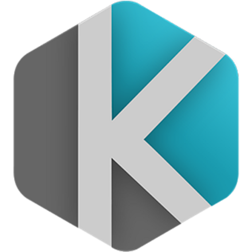
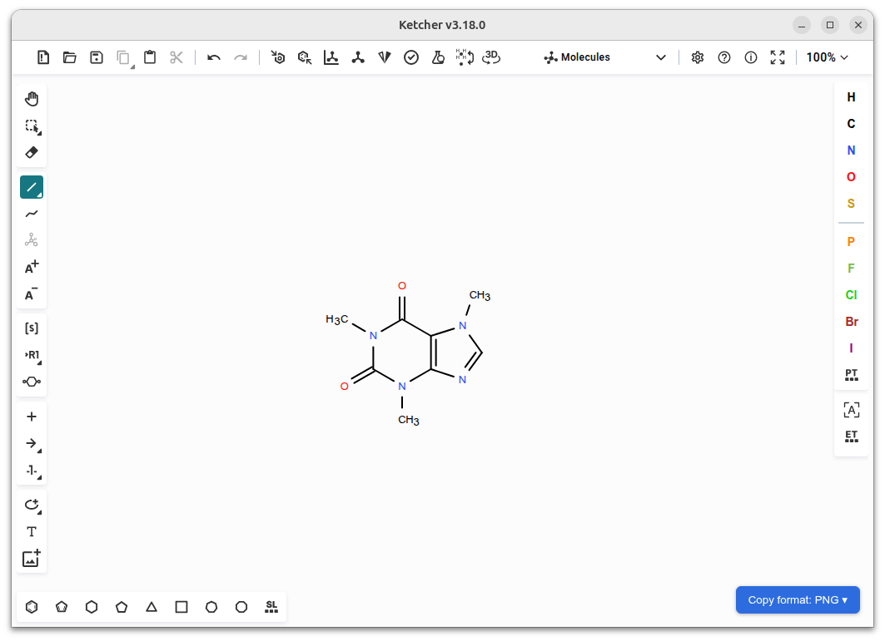
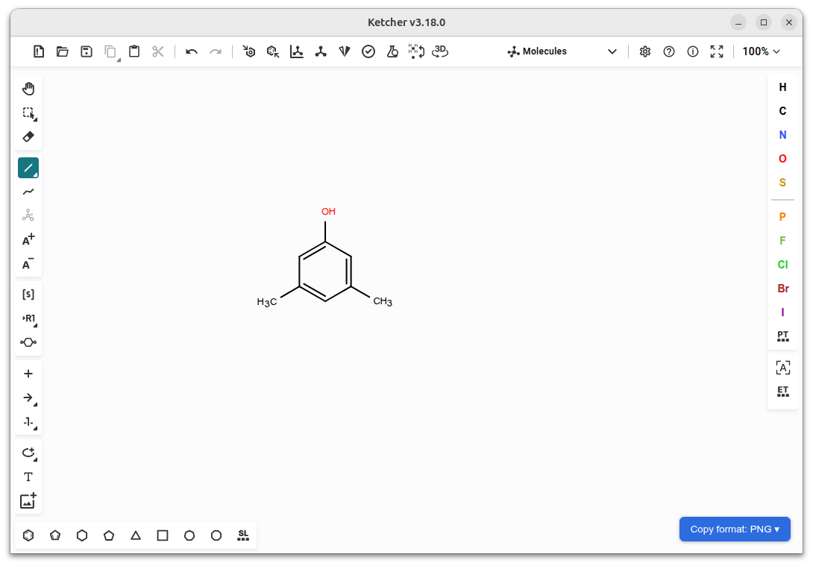
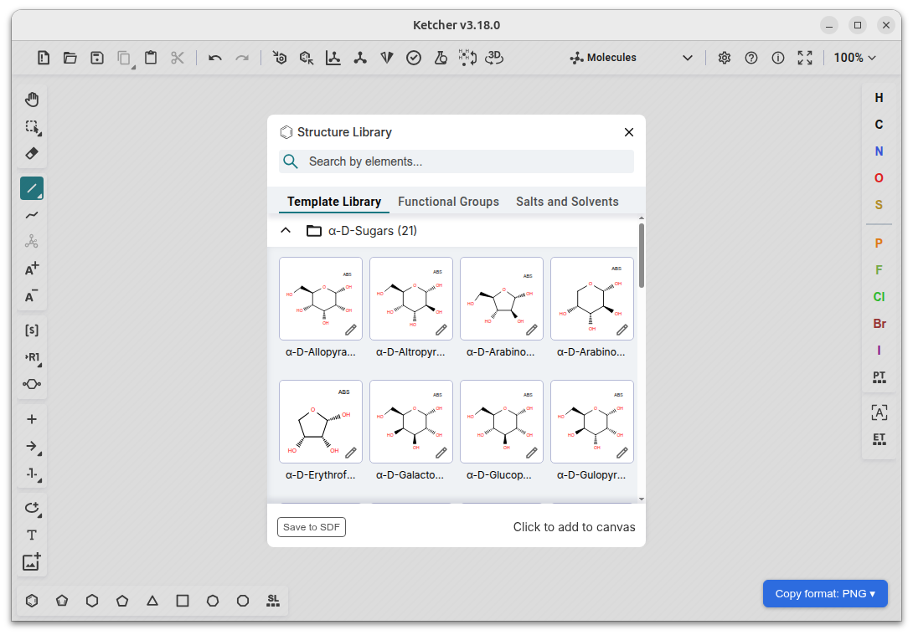
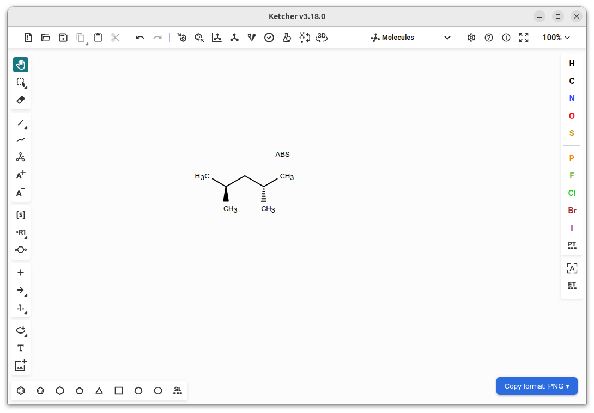
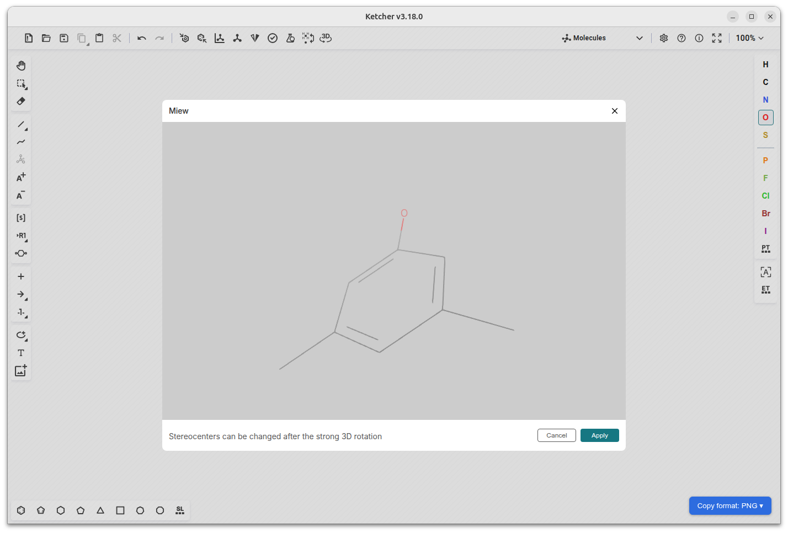
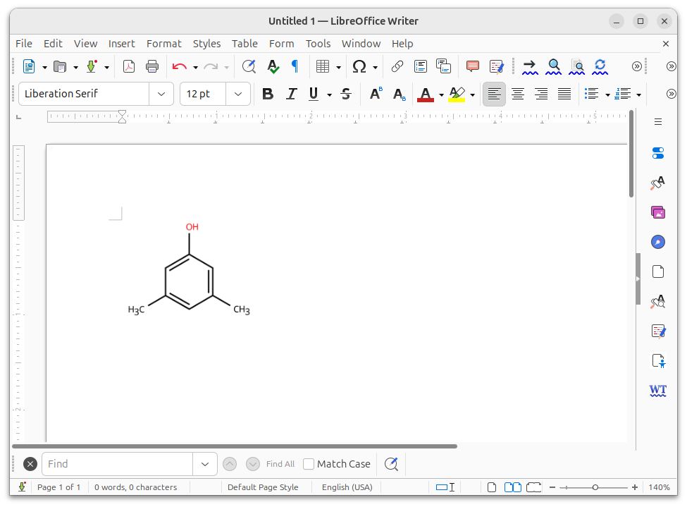
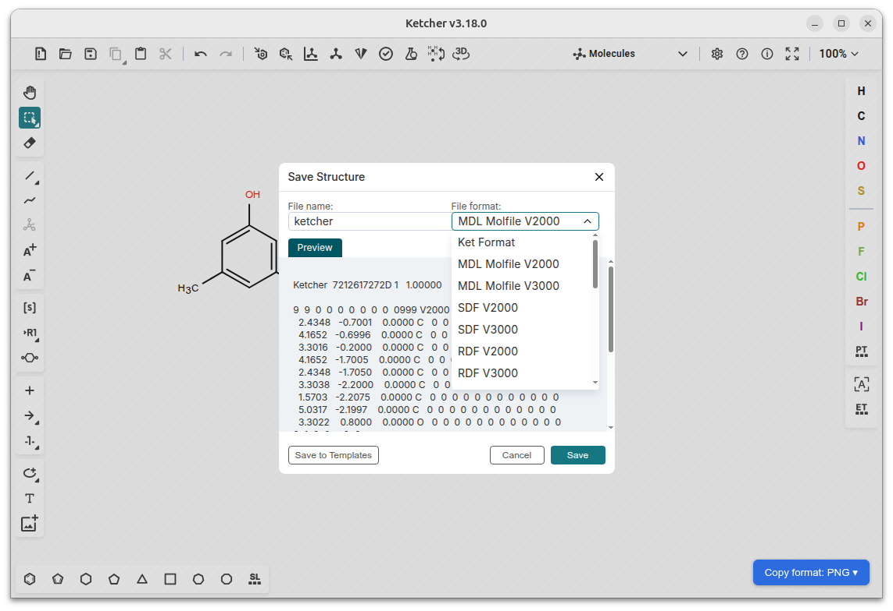

Ketcher DesktopKetcher Desktop wraps EPAM's open-source Ketcher editor in a native app. Draw molecules and reactions fully offline — no browser, no server, no setup.
Free & open source, Apache 2.0 — for Linux, Windows, and macOS

All the capability of the web-based Ketcher editor, packaged so chemists who don't want to run a browser tab or a backend server can just double-click and draw.
Fast, standards-compliant drawing of molecules and reactions.
Built-in Miew viewer for inspecting structures in three dimensions.
Built-in and custom templates, Generic groups, and query features.
Full support during editing, loading, and saving structures.
Copy a structure and paste it into Word or LibreOffice at true 300 DPI.
Switch to peptide, nucleotide, and CHEM/sequence editing from the toolbar.
MDL Molfile, RXN, InChI, ChemAxon Extended SMILES, CML, and SMILES.
Runs on a bundled WASM engine — no Indigo backend, no internet required.
A few corners of the app, straight from a real running build.

Fast, precise bond and atom tools on a clean canvas.

Hundreds of built-in templates, searchable by name or element.

Wedge/dash bonds and absolute-configuration labeling, done right.

Flip any structure into the built-in Miew 3D viewer.

Copy in Ketcher Desktop, paste straight into LibreOffice or Word.

Molfile, SDF, RDF, InChI, SMILES, Ket, and more — export straight from the save dialog.
Pick your platform. Builds are currently unsigned, so expect a SmartScreen or Gatekeeper warning on first launch.
All installers are published on the GitHub Releases page, including current pre-releases with the latest features.
Ketcher Desktop is a desktop molecular editor, lovingly built on top of Ketcher, the excellent open-source chemical structure editor built and maintained by the team at EPAM Systems.
All of the actual chemistry — drawing, rendering, stereochemistry, macromolecules — is Ketcher. This project just makes it installable, offline, and clipboard-friendly for chemists who'd rather not run a browser tab.
Thank you to the EPAM Ketcher team for building and open-sourcing it under Apache 2.0. Bug reports, ideas, and contributions are always welcome.